CS184 Spring 2026 Homework 2 Write-Up
Link to webpage: https://cal-cs184-student.github.io/hw-webpages-crystallamar/hw2/
Link to GitHub repository:https://github.com/cal-cs184-student/hw2-meshedit-crystallamar.git

Overview
In this homework, I implemented core geometric modeling algorithms currently used in graphics. The first two parts worked with Bezier curves and surfaces using de Casteljau's algorithm. Next I worked with triangle meshes and the half-edge data structure. This included computing smooth vertex normals, implementing edge flips and splits, and finally building Loop subdivision for mesh upsampling.
The most interesting thing I learned was how precisely the half-edge data structure requires every pointer to be correct — a single wrong assignment in flipEdge caused the entire mesh traversal to break on the second subdivision pass, producing wildly corrupted vertex degrees. Debugging this taught me to think very carefully about vertex cycles and how twin()->next() traversal must always return to its starting point.
Section I: Bezier Curves and Surfaces
Part 1: Bezier curves with 1D de Casteljau subdivision
De Casteljau's algorithm is a recursive method for evaluating a point on a Bezier curve. Given n control points and a parameter t (between 0 and 1), the algorithm repeatedly performs linear interpolation between adjacent points, reducing the count by one each step until a single point remains — the point on the curve at parameter t.
Each interpolated point is computed as: \[ \text{newPoint} = (1 - t) \cdot \text{point}[i] + t \cdot \text{point}[i+1] \]
In my implementation, evaluateStep() performs one level of this reduction: given n points, it returns n-1 interpolated points. To trace the full curve, this function is called repeatedly at many values of t.
Below are screenshots showing each step of de Casteljau evaluation on my custom 6-point Bezier curve, followed by the completed curve and a modified version with adjusted control points and t value.
|
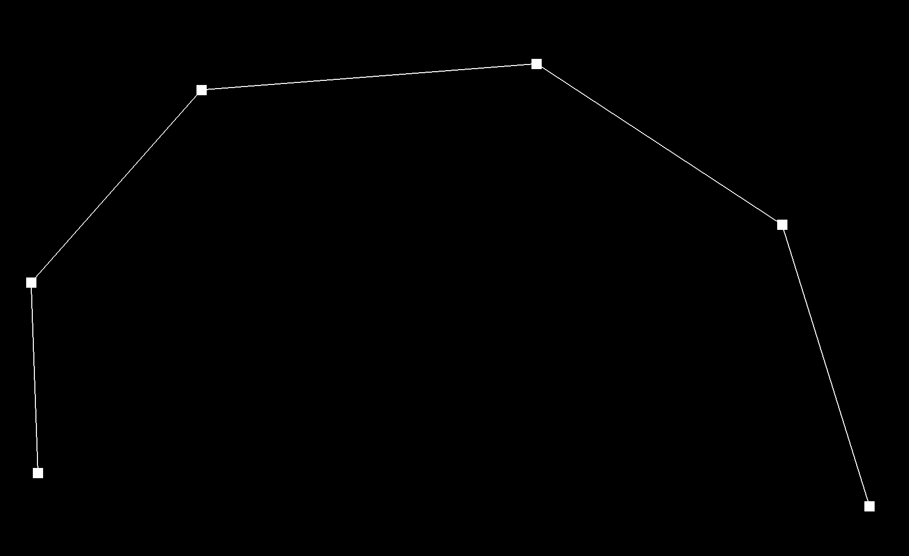 |
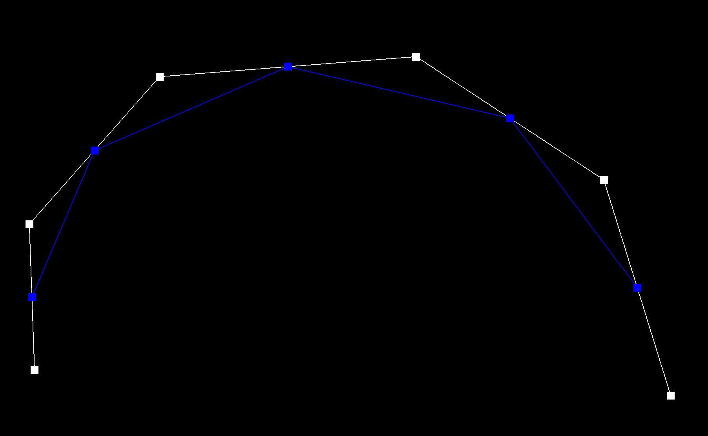 |
|
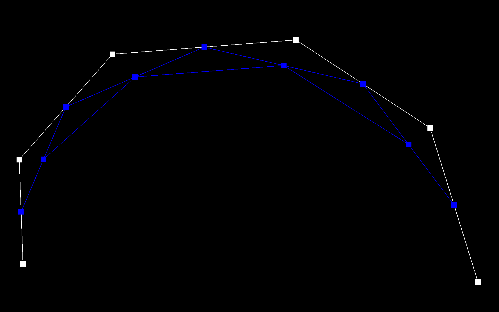 |
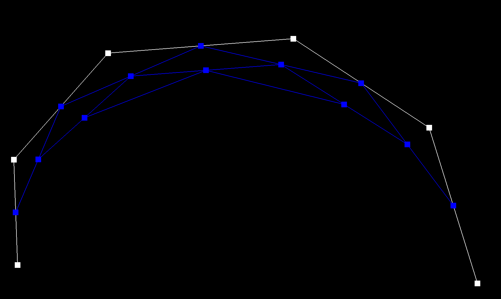 |
|
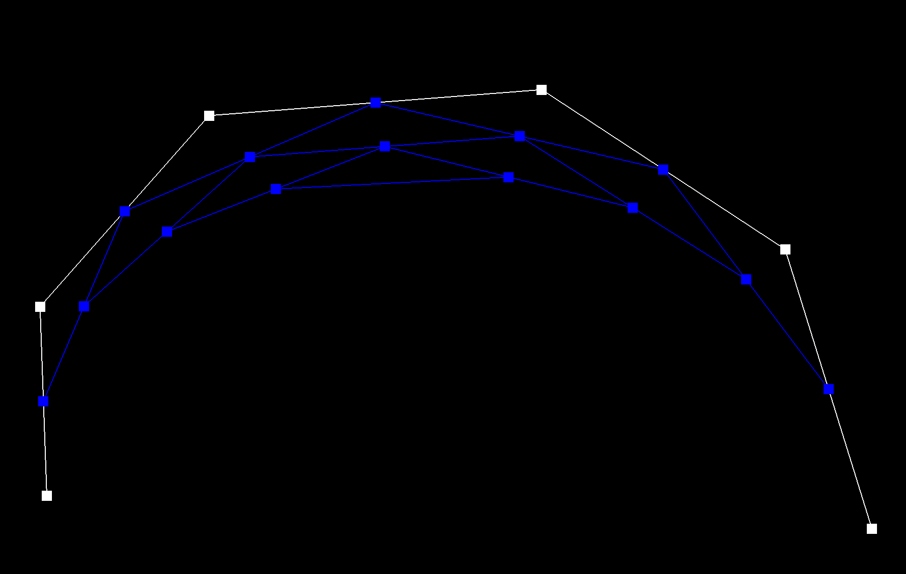 |
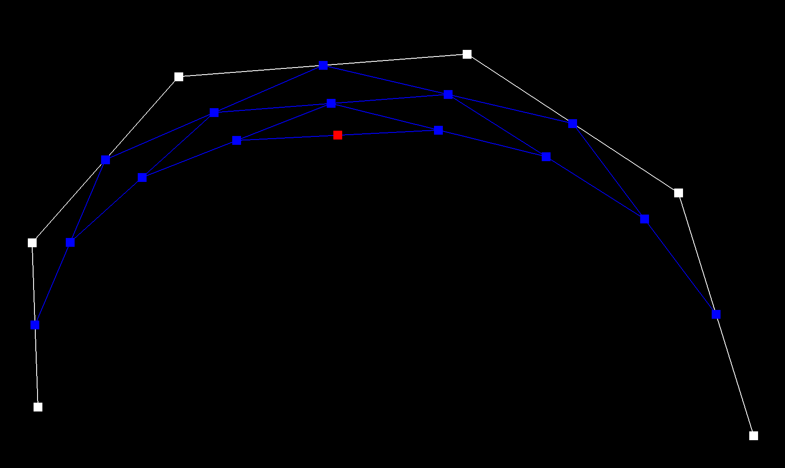 |
|
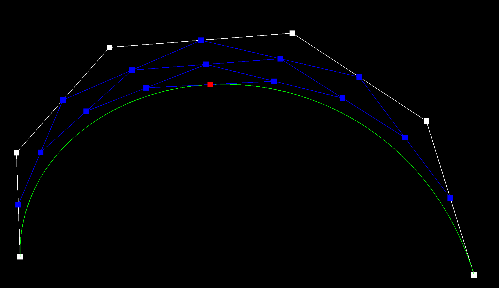 |
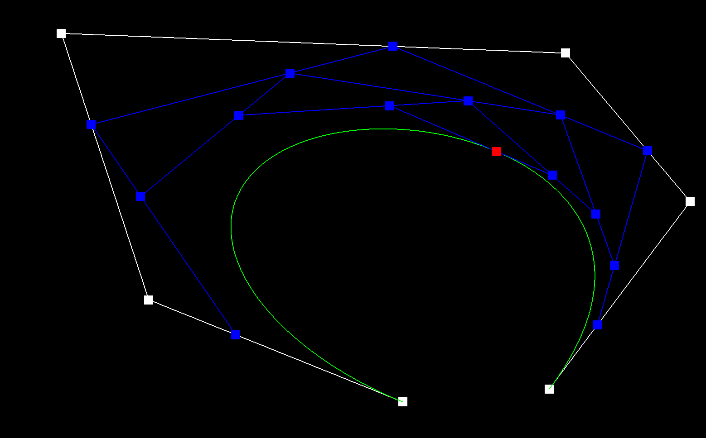 |
Part 2: Bezier surfaces with separable 1D de Casteljau
De Casteljau's algorithm extends to Bezier surfaces by applying it twice — once for each dimension. Given an n×n grid of control points and parameters u and v, the algorithm first runs on each row using parameter u, reducing each row down to a single point. This produces a column of n points, which is then evaluated using parameter v to yield the final surface point.
This was implemented across three functions. evaluateStep() performs one level of interpolation on a vector of 3D points (identical in structure to Part 1 but operating in 3D). evaluate1D() repeatedly calls evaluateStep() until only one point remains, fully collapsing a row or column. evaluate() ties these together by calling evaluate1D() on each row with parameter u, then calling evaluate1D() on the resulting column of points with parameter v.
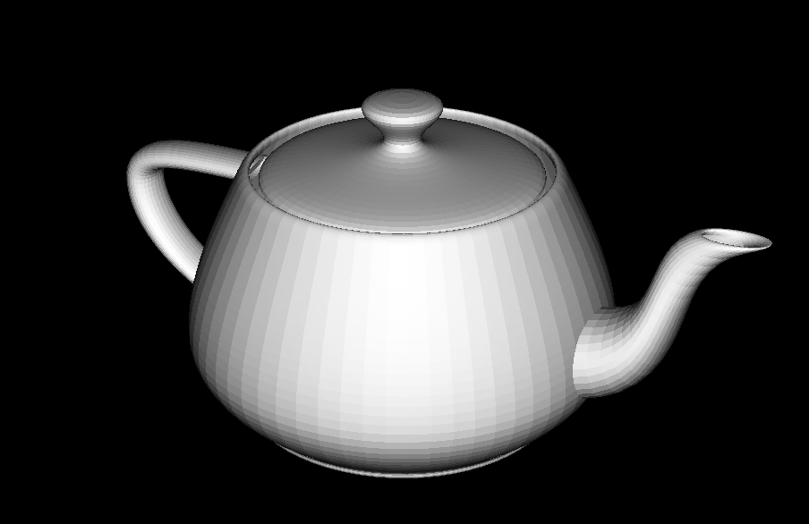
Section II: Triangle Meshes and Half-Edge Data Structure
Part 3: Area-weighted vertex normals
To compute area-weighted vertex normals, I iterated through all triangles surrounding a given vertex using the half-edge data structure. Starting from the vertex's halfedge, I rotated around the vertex by repeatedly calling twin()->next(), visiting each neighboring triangle.
For each triangle, I then retrieved the positions of its three vertices and computed two edge vectors (p1 - p0) and (p2 - p0), then took their cross product. This produced a vector perpendicular to the triangle whose magnitude equaled twice the triangle's area — providing area-weighting automatically without any extra computation. I accumulated these cross products into a running sum, then normalized with .unit() at the end to return a unit-length normal vector.
|
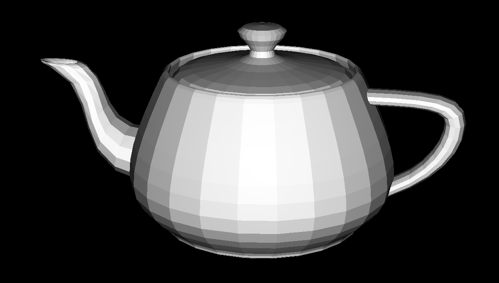 |
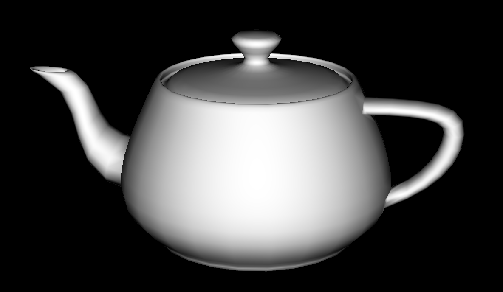 |
Part 4: Edge flip
To implement edge flip, I started by drawing a careful diagram showing two adjacent triangles ABD and BCD before and after the flip. The shared edge BD is replaced by a new edge connecting vertices A and C, producing triangles ABC and ACD.
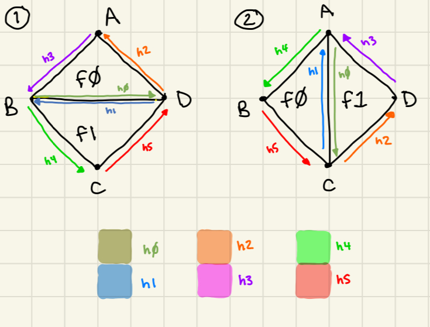
In the implementation, I first collected all relevant mesh elements: the 6 half-edges, 4 vertices, 2 faces, and the shared edge. I then reassigned all pointers using setNeighbors() to reflect the new configuration. Next, I reassigned every pointer.
The most helpful debugging tool was the physical diagram — having every half-edge direction labeled and color-coded made it straightforward to verify each setNeighbors() call against the expected post-flip topology.
|
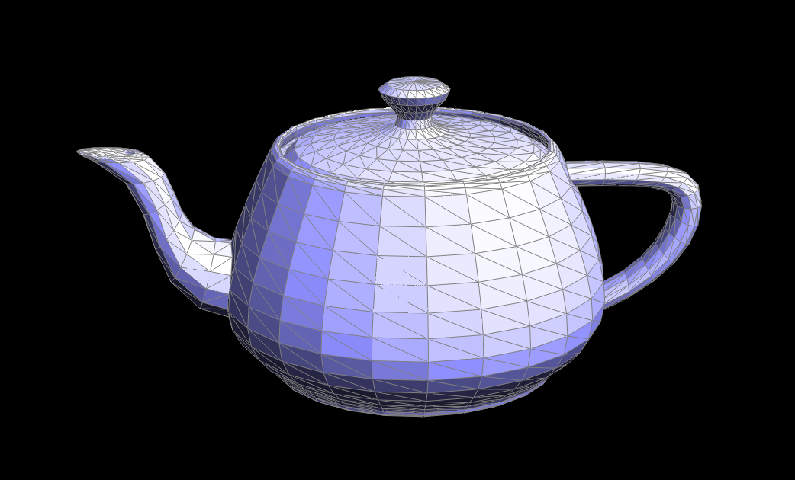 |
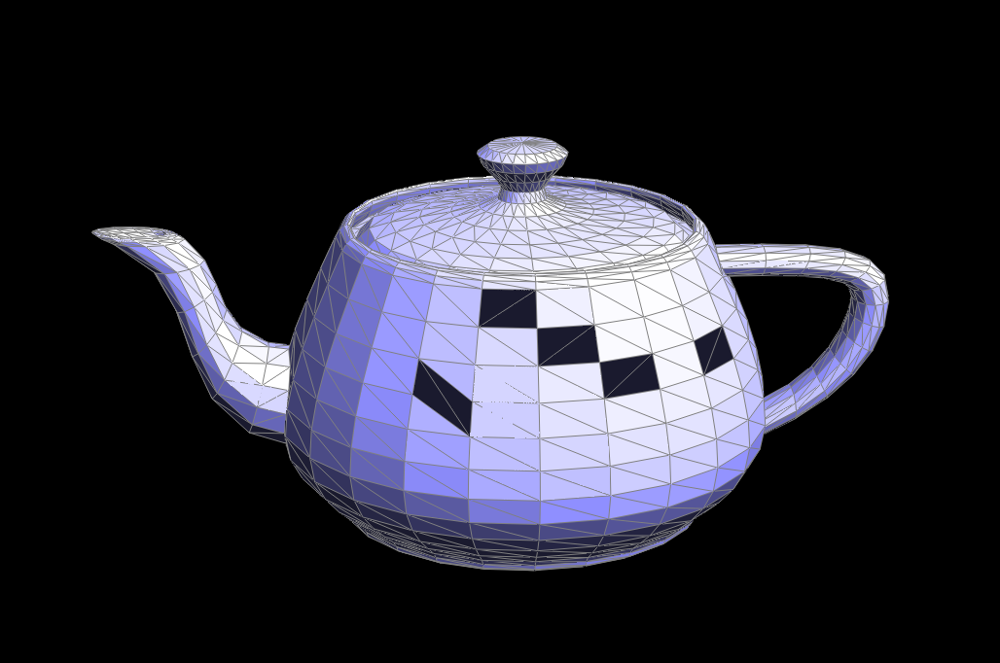 |
Part 5: Edge split
To implement edge split, I again started by collecting all existing mesh elements — the 6 half-edges, 4 vertices, 2 faces, and the shared edge. I then allocated all new elements needed to produce four triangles from the original two: 1 new vertex at the midpoint of the split edge, 3 new edges, 2 new faces, and 6 new half-edges.
After reassigning all pointers using setNeighbors() to wire up the four new triangles, I also had to explicitly assign halfedge() pointers for all new edges. I initially missed this step, which caused a segfault. I used print statements to narrow down the crash to the face traversal for f0, which allowed me to identify the missing edge halfedge assignments.
For loop subdivision, new edges that connect the new midpoint vertex to an original vertex are marked isNew = true, while the two halves of the original split edge are marked isNew = false.
|
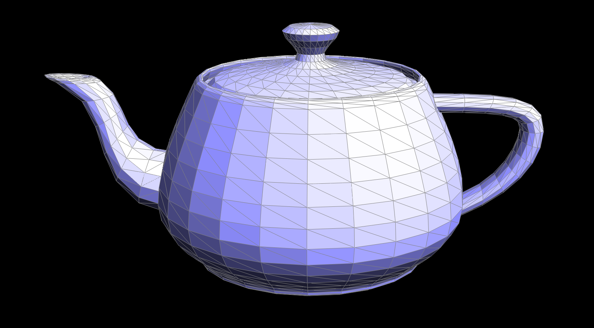 |
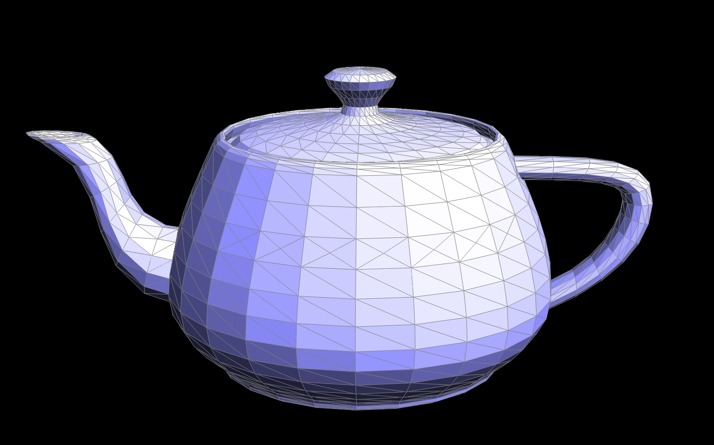 |
|
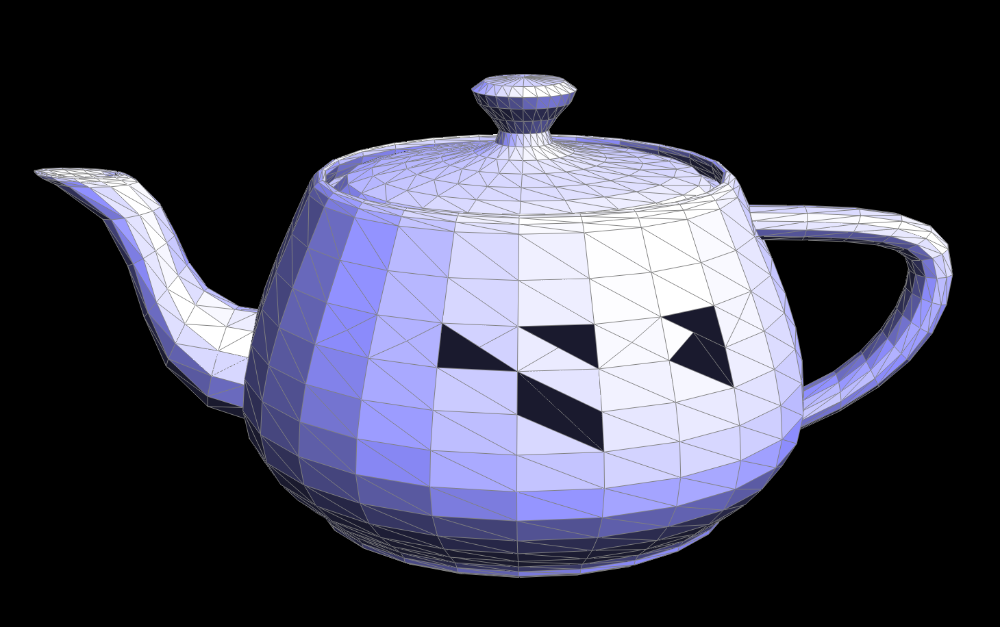 |
Part 6: Loop subdivision for mesh upsampling
Loop subdivision increases mesh resolution by splitting every edge and repositioning vertices according to weighted averages of their neighbors. My implementation follows five steps:
First, I computed updated positions for all of the existing vertices using the Loop subdivision rule and stored them in vertex->newPosition. For each old vertex with degree n, I computed \( u = 3/16 \) if \( n = 3 \), otherwise \( u = 3/(8n) \), then set:
\[ \text{newPosition} = (1 - n \cdot u) \cdot \text{originalPosition} + u \cdot \text{neighborSum} \]
Second, I computed the position each new edge-midpoint vertex took and stored it in edge->newPosition using:
\[ \text{newPosition} = \frac{3}{8}(A + B) + \frac{1}{8}(C + D) \]
where A and B are the edge endpoints and C and D are the opposite vertices of the two adjacent triangles.
Third, I split every original edge in the mesh. I recorded the number of original edges before the splitting began and used a counter to ensure I only split those edges. This prevented infinite loops from newly created edges being processed. After each split, I copied the precomputed edge->newPosition into the new vertex's newPosition.
Fourth, I flipped any new edge that connected one old vertex and one new vertex. This re-triangulated the mesh into the correct Loop subdivision connectivity pattern.
Fifth, I copied every vertex's newPosition into its final position.
Sharp corners and edges
After repeated subdivision, sharp corners and edges become rounded and smoothed out. This happens because the Loop subdivision rule repositions each vertex as a weighted average of its neighbors — corners with few neighbors get pulled toward the mesh interior, losing their sharpness. Ultimately, this leads to the cube's corners becoming rounder until the mesh begins to resemble a sphere.
|
|
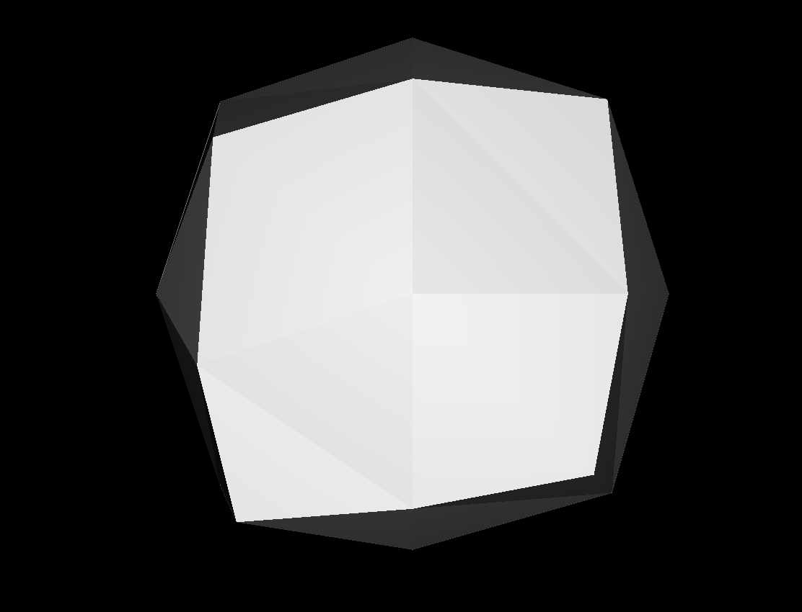 |
Pre-splitting to reduce asymmetry
The cube subdivides asymmetrically because each face has only a single diagonal edge, making the triangulation asymmetric — one corner of each face is connected differently than the others. When Loop subdivision is applied, this asymmetry gets amplified with each pass.
To fix this, I pre-split the diagonal edge on each face of the cube before subdividing. This makes the mesh symmetric along all three axes before any subdivision occurs. When Loop subdivision is then applied, the result is a much more symmetric and rounder shape because each vertex now has a symmetric neighborhood of neighbors to average over.
|
|
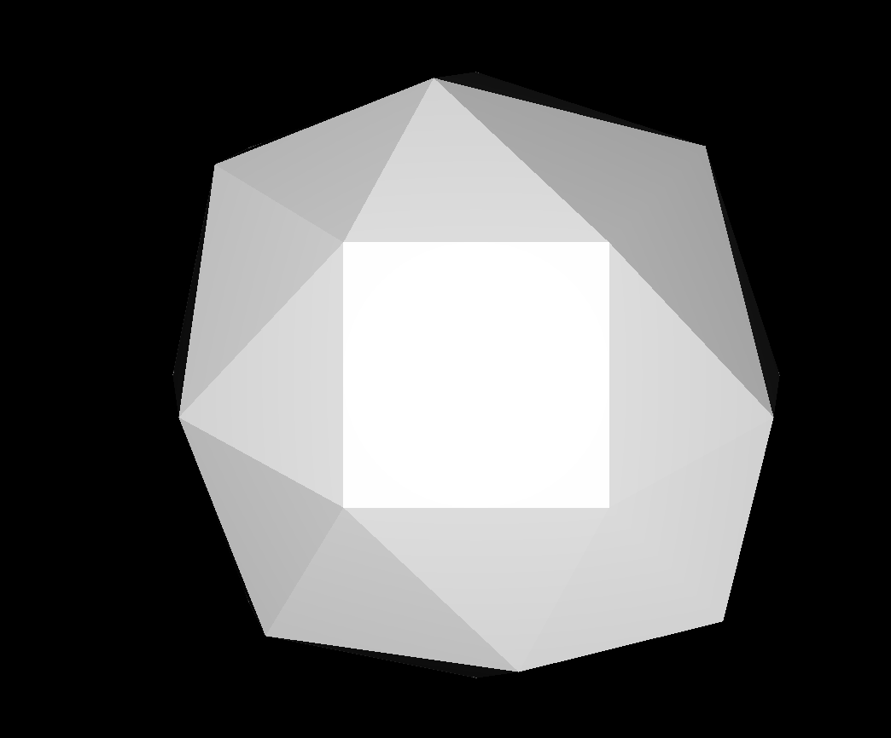 |
|
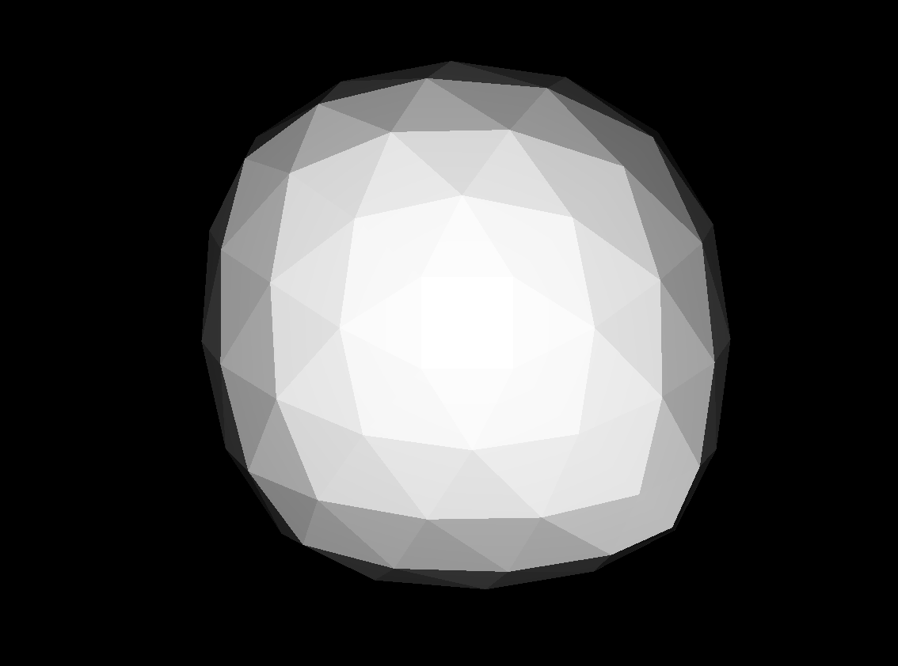 |
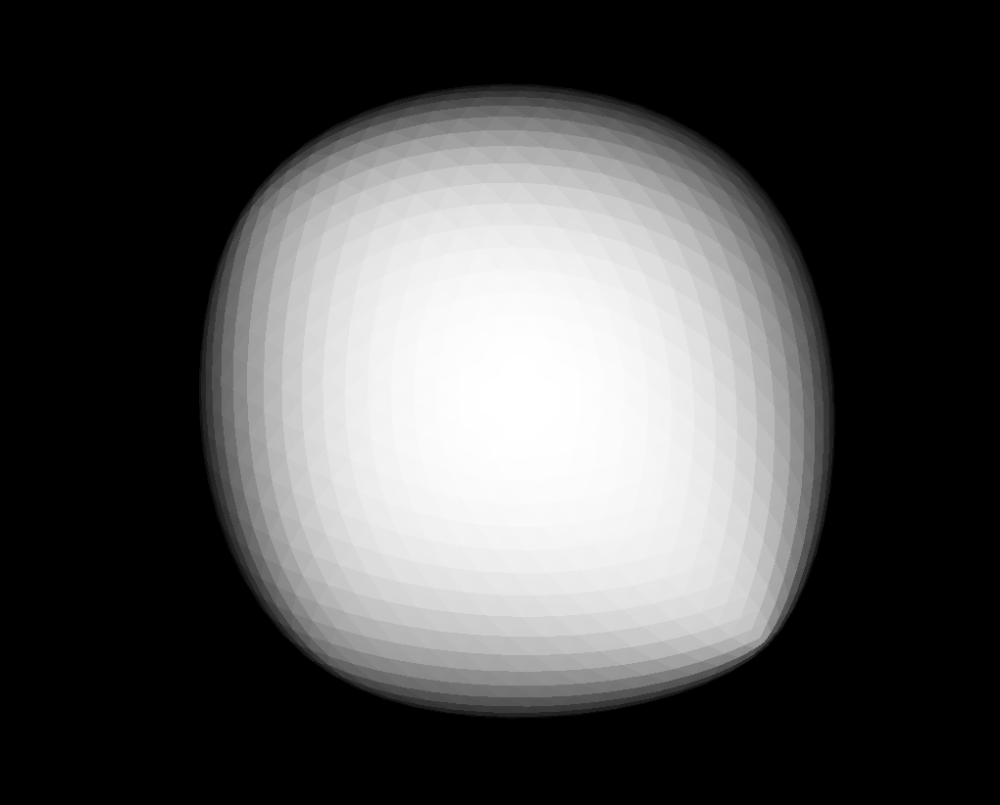 |